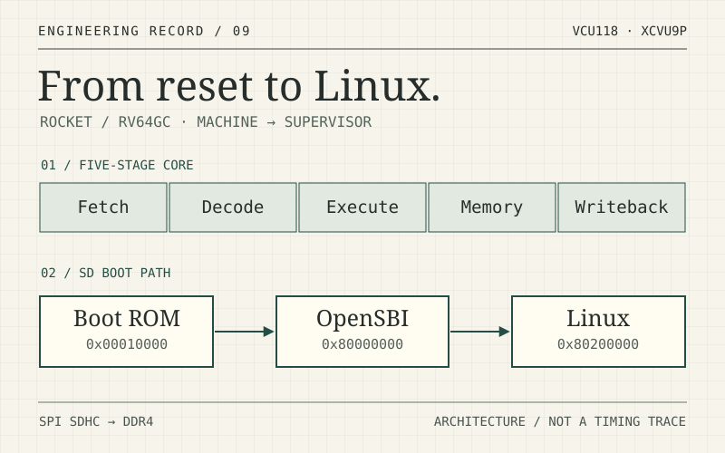

VCU118 Rocket：从复位向量到 Linux
在没有硬处理器的 VCU118 上，第一条指令由 FPGA 内的 Rocket 执行。11 月 26 日 15:49，串口另一端的 BusyBox 返回了现场生成的算术挑战结果。下面分别列出支持这次启动的 RTL、布线与实板记录。

哪些测试跑在了哪台机器上？
| 环境 | 已观察到 | 边界 |
|---|---|---|
| Rocket RTL | 裸机完成两轮 1 MiB 读写；四种坏卡输入均在 ROM 停机。 | SD 和外存是行为模型。 |
| 串口恢复 ROM · RTL | 不预装 RAM、不读 SD：用 UART 送入 422 字节程序，Rocket 在 13,049,856 个模拟周期内完成两轮 1 MiB 内存自检。坏魔数、超长、错误 CRC 三项均停在 ROM。 | 此行记录模型串口引脚；下方另列实机串口下载结果。 |
| INT8 点积 · Rocket RTL | Rocket 裸机经 TileLink 写入两个操作数、取回四项乘积之和；257 组向量全部与标量参考一致，空取和重复提交两种错误均被识别。 | 整段诊断耗时 695,296 个模拟周期，含启动及串口输出。首版组合设计因三 LUT 组合环被 Vivado 拒绝写 bit，未上板。 |
| Linux 内核 · Rocket RTL | 第 4,000 万个模拟周期，通过 JTAG 停核并读到 PC；匹配的内核 ELF 将该地址定位到 memmap_init_range+0xfe，当时 hart 处于 S 模式，Sv39 已开启。 | 固件预载到模拟 RAM。另一个限用 128 MiB 的配置已运行 /init，并输出 Linux 6.6.65 的 uname。它使用模拟外存。 |
| QEMU virt | 10 次独立启动，均完成 16 MiB 自检并响应 shell 命令。 | 不含 VCU118 的 DDR PHY 或引脚。 |
| 整机布线 · Vivado | 实测所用的调试缓冲版有 113,460 条网络，全部布通。最差建立裕量 +0.403 ns、保持 +0.011 ns、脉宽 +0.143 ns；100 MHz 系统同域建立裕量 +1.205 ns。 | 跨域报告仍有 7 条严重项；本轮仅用 J106 配置与 J4 串口，不据此签核外接调试口或 SD。 |
| 独立探针 · 实板 | 通过 JTAG 易失配置独立诊断设计，三个 SLR 的 DONE 均为 1、CRC_ERROR 均为 0。FPGA 侧串口收到 260 个随机请求并返回 1,040 字节，宿主逐条核对通过，含序号回绕。 | 这次板测只验配置、时钟链和双向 UART；诊断电路不含 Rocket 或 DDR，未写 Flash 或 SD。 |
| Rocket 与 DDR4 · 实板 | JTAG 易失配置后，从 J4 上传 422 字节程序。Rocket 两轮写读 1 MiB，计时器前进。另一次启动检查四个地址窗口：各 4 KiB、两轮，逐条刷出 L2 缓存线再读回，均通过。 | 另取的 MIG 只读校准快照为 CAL PASS：1 rank、64 数据位。这两项是抽测；另一轮大范围扫描如下。 |
| 2,032 MiB 扫描 · 实板 | 先写满 254 个 8 MiB 块，再逐字读回。地址图样及其反相均通过，每次写约 46.22 秒，读并校验约 45.84 秒。 | 为程序和启动栈保留的两个 8 MiB 块未测。这里记录 CPU 端到端耗时，不是 DDR 峰值带宽。 |
| Linux 与 BusyBox · 实板 | 通过 J4 向板上传 5,341,704 字节固件，OpenSBI 进入 Linux 6.6.65。16 MiB 启动自检通过，BusyBox 1.36.1 的 ash 返回随机命令的计算结果。同一启动上又完成 13 轮 16 MiB 写读，定时器中断增加 3,893 次。 | hart 0、Sv39，Linux 报告 MemTotal 2,061,808 KiB。使用 RAM 中的 initramfs，没有写 Flash 或 SD，也未据此测算 DDR 峰值带宽。 |
| 两个 Linux 进程 · 实板 | 停核信号拆分版单独重启后，父子进程对同一虚拟页写入不同内容，校验各自的 4 KiB。64 轮管道交接后，两个进程的浮点寄存器保持正确，共享计数器恰好加到 128。 | 一个 hart，验证写时复制、RV64 原子加法及浮点上下文；不代表多核一致性测试。拆分版另一次裸机扫描也通过 2,032 MiB。 |
| 同一固件启动 · 实板 | 两次从 J4 开始发送，到 BusyBox 答对现场命令：原始 5,341,704 字节用 495.050 秒，自解压 2,018,528 字节用 194.469 秒。板端校验了还原后的固件。 | 同一块板、同一 bit 的一对观察值，不含 JTAG 配置。两次启动的内核与用户程序没有变化。 |
| CPU 工作负载 · 实板 | 100 MHz 单核 Rocket，Linux 用户态。GCC 15.1 配合 -O3、LTO 和 Zba/Zbb，性能种子三次中位数 254.232 次/秒，验证种子 252.813 次/秒。比同次启动的 GCC 13.3 对照快 3.047%。 | 三种编译配置交错测试，每种配置 3 次、两套种子各 12,000 轮。一个上下文、2,000 字节，CRC 与墙钟核验通过。独立测量，非认证成绩。 |
| 通用 RV64GC · 实板 | 重启后，在同一颗 100 MHz Rocket 上、不使用 Zba/Zbb：GCC 13.3 的 -O2 与 -O3 分别为 216.924 和 223.743 次/秒；GCC 15.1 的 -O3 -flto 为 228.241 次/秒。均为三次性能中位数。 | 三份程序、两套种子，共 18 次计时通过 CRC 与主机墙钟复核。这是给后续 BOOM 共用的软件基准。查看各次测量 ↗ |
| 串口压力 · 实板 | 首轮第 27 行发送 256 字符，板上只校验到 233 字符；保持同一启动重测，32 行、8,192 字符及全部摘要和 ACK 都匹配。 | 保留首轮失败。期间有内核日志插入，不能仅凭回显判定哪一层丢失。 |
四路是一个核，不是四个核。 同一份通用 -O2 程序，双路、三路和四路 BOOM 的性能种子中位数依次是 223,562、177,191.75 和 162,125.50 周期/轮。换用两份编译产物、两套种子，四路的 12 个 RTL 窗口全部低于每轮 175,000 拍。要将这一优势兑现，四路在 -O2 的实时时钟至少要保住三路的约 91.5%。这是裸机模型；175 MHz 未获整机布线验证，不能将窗口换算成 Linux 实板得分。
双路 100 MHz 原版布线通过，但调试停核请求存在跨时钟风险，所以未下载该 bit。三路 175 MHz 的布局前估算定位到数据缓存至整数发射队列的 38 级路径。已测得的最高实板中位数仍是 Rocket 的 254.232，而不是任一 BOOM 的推算值。
四路派发会不会多等一拍？ 将发射队列改为每四槽一组计数后，24、32、40 槽三种队列都通过了逐拍等价证明。即使自由选择每个槽是否可用，四路派发许可也与原版一致。故意漏掉最后一个槽，三次都找到了反例。这回答的是延迟是否改变；整核能否提高时钟，要由布线回答。查看三个队列的证明与反例 ↗
四核与单核分开验。 四核九级 Rocket 在 RTL 中完成 64 次共享交接、和为 2,080。每核逐拍检查 256 条退休整数指令，其中 251 条走过连续九级。它验证了这一段程序，不是四核板测；四核吞吐也不计入单核成绩。性能实验与选型 ↗ · 三路与四路逐次计数 ↗ · 单核实板逐次记录 ↗ · 四核轨迹与参考论文 ↗